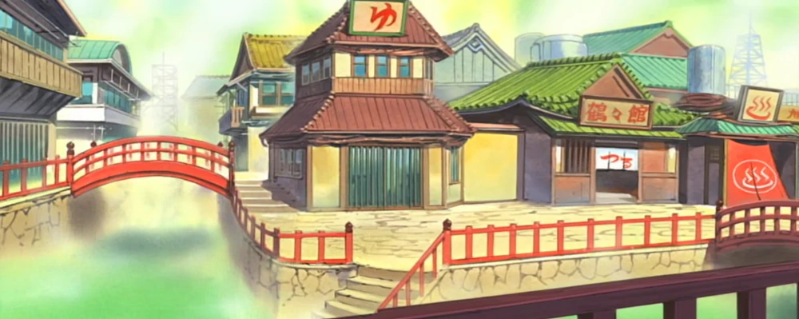

Les Grandes sources chaude de KONOHA
 Les bains de Konoha font offices de véritables espaces de détente et de regain d’énergie.
Divisé au milieu entre les sexes, les Shinobi peuvent utiliser les bains comme terrain d'entraînement pour l'entraînement de base au chakra.
En utilisant l'eau chaude comme une forme de motivation, le stagiaire est plus concentré sur l'utilisation de son chakra pour se maintenir sur l'eau.
C'est là que Naruto est emmené par Jiraiya pour se détendre pendant son entraînement.
Comme tout le reste à Konoha, à l'exception de la bibliothèque d'archives de Konoha, elle a été détruite lorsque Pain a utilisé un énorme Shinra Tensei pour détruire le village..
👉🏽 Jiraya, le Sannin légendaire, aimait beaucoup admirer les filles et « prendre des infos » pour son roman.